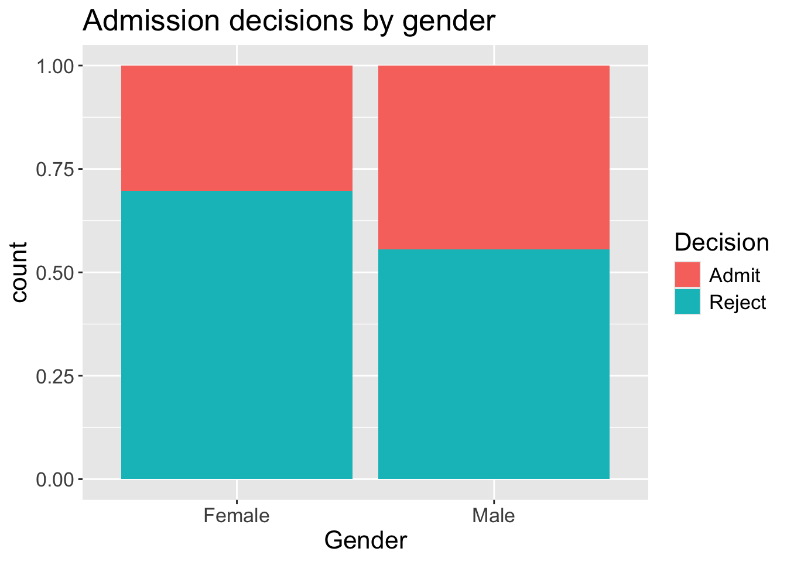
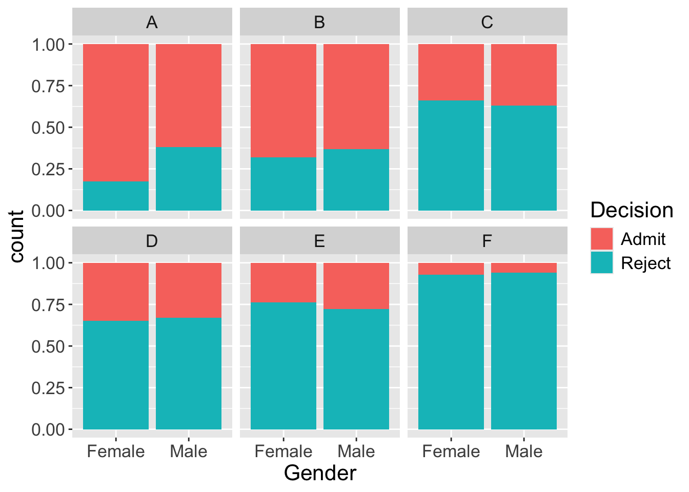
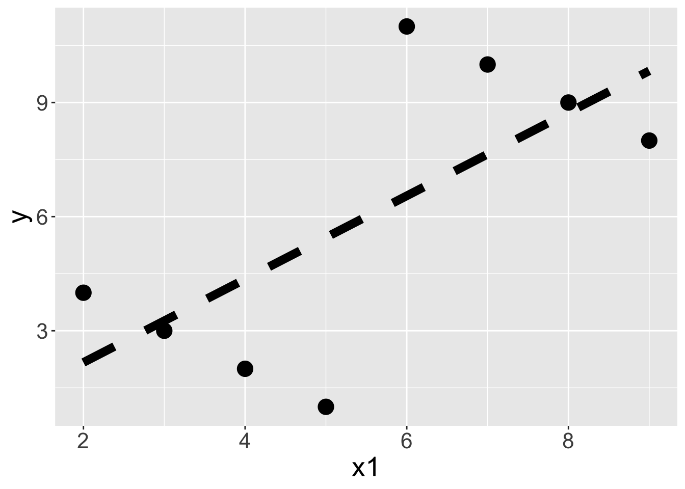
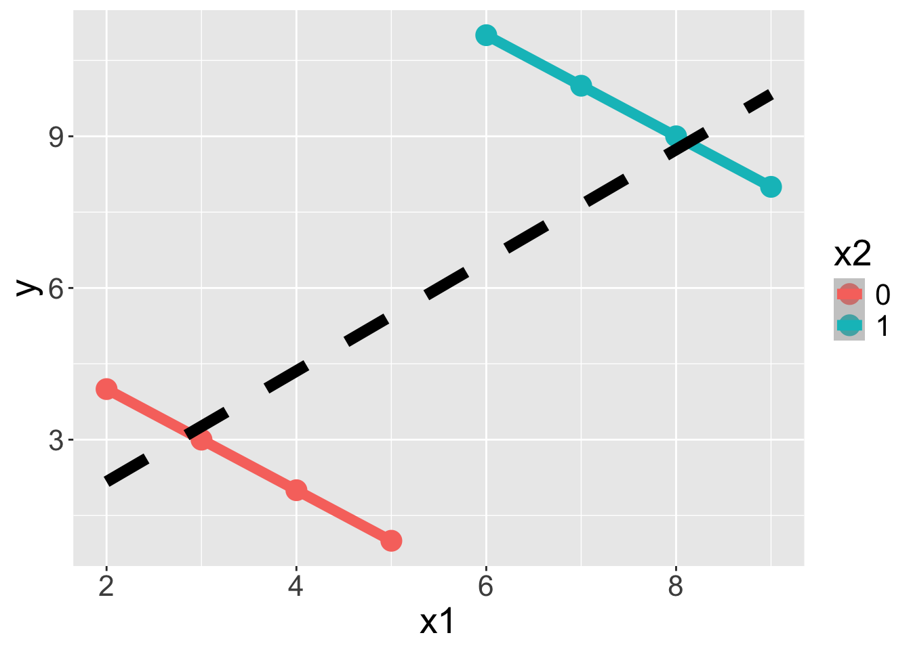

── Attaching core tidyverse packages ──────────────────────── tidyverse 2.0.0 ──
✔ dplyr 1.1.4 ✔ readr 2.1.5
✔ forcats 1.0.0 ✔ stringr 1.5.1
✔ ggplot2 3.5.1 ✔ tibble 3.2.1
✔ lubridate 1.9.3 ✔ tidyr 1.3.1
✔ purrr 1.0.2
── Conflicts ────────────────────────────────────────── tidyverse_conflicts() ──
✖ dplyr::filter() masks stats::filter()
✖ dplyr::lag() masks stats::lag()
ℹ Use the conflicted package (<http://conflicted.r-lib.org/>) to force all conflicts to become errors
Rows: 4526 Columns: 3
── Column specification ────────────────────────────────────────────────────────
Delimiter: ","
chr (3): Decision, Gender, Dept
ℹ Use `spec()` to retrieve the full column specification for this data.
ℹ Specify the column types or set `show_col_types = FALSE` to quiet this message.Simpson’s paradox
Housekeeping
Homework 4 due this Saturday at 11:59pm
Content through today is fair game for Midterm 1
Brief recap
Study design
What are the differences between observational studies and experimental studies?
What is a confounding variable?
UC Berkeley admissions
Observational study on sex bias based on Fall 1973 admissions data to the graduate program at the University of California, Berkeley
| Admit | Deny | Total | |
|---|---|---|---|
| Men | 3738 | 4704 | 8442 |
| Women | 1494 | 2827 | 4321 |
| Total | 5232 | 7531 | 12763 |
What is the probability of admission for a randomly selected applicant?
What is the probability of admission among men? Among women?
Are the probabilities you found marginal, joint, or conditional probabilities?
Suppose we want to understand the relationship between gender and admission decision. What sort of visualization might be appropriate for representing this data?
UC Berkeley admissions (cont.)

Case study
Dive into data
We have more nuanced data about the graduate admissions: we know the department that each person was applied to.
We will consider the six largest departments: A, B, C, D, E, F
- The first six observations in the data frame are as follows:
head(admissions)# A tibble: 6 × 3
Decision Gender Dept
<chr> <chr> <chr>
1 Admit Male B
2 Reject Female C
3 Admit Male C
4 Reject Female C
5 Admit Male A
6 Reject Male F What sort of EDA would be interesting/appropriate for these data?
Frequency tables
Number of applicants by department:
Female applicants:
| Dept | n |
|---|---|
| A | 108 |
| B | 25 |
| C | 593 |
| D | 375 |
| E | 393 |
| F | 341 |
Male applicants:
| Dept | n |
|---|---|
| A | 825 |
| B | 560 |
| C | 325 |
| D | 417 |
| E | 191 |
| F | 373 |
More-detailed frequency tables
Number of applicants by department and admission status:
Female applicants:
| Dept | Decision | n |
|---|---|---|
| A | Admit | 89 |
| A | Reject | 19 |
| B | Admit | 17 |
| B | Reject | 8 |
| C | Admit | 202 |
| C | Reject | 391 |
| D | Admit | 131 |
| D | Reject | 244 |
| E | Admit | 94 |
| E | Reject | 299 |
| F | Admit | 24 |
| F | Reject | 317 |
Male applicants:
| Dept | Decision | n |
|---|---|---|
| A | Admit | 512 |
| A | Reject | 313 |
| B | Admit | 353 |
| B | Reject | 207 |
| C | Admit | 120 |
| C | Reject | 205 |
| D | Admit | 138 |
| D | Reject | 279 |
| E | Admit | 53 |
| E | Reject | 138 |
| F | Admit | 22 |
| F | Reject | 351 |
Visualize

Closer look
Probability of admission conditioning on gender and department:
| Dept | Gender | cond_prob_admit |
|---|---|---|
| A | Female | 0.82 |
| A | Male | 0.62 |
| B | Female | 0.68 |
| B | Male | 0.63 |
| C | Female | 0.34 |
| C | Male | 0.37 |
| D | Female | 0.35 |
| D | Male | 0.33 |
| E | Female | 0.24 |
| E | Male | 0.28 |
| F | Female | 0.07 |
| F | Male | 0.06 |
- Are all departments uniform in admission rates?
- Do admissions still seem biased against female applicants?
What’s going on?
But wait… didn’t we start by noting that men were way more likely to be admitted than women?
The first two departments (A and B) are easy to get into
The following table shows for each gender, the proportion of applicants each department received.
| Gender | Dept | cond_prop |
|---|---|---|
| Female | A | 0.059 |
| Female | B | 0.014 |
| Female | C | 0.323 |
| Female | D | 0.204 |
| Female | E | 0.214 |
| Female | F | 0.186 |
| Male | A | 0.307 |
| Male | B | 0.208 |
| Male | C | 0.121 |
| Male | D | 0.155 |
| Male | E | 0.071 |
| Male | F | 0.139 |
What do you notice?
Simpson’s paradox
The UC Berkeley admissions observational study is an example of Simpson’s paradox: when omitting one explanatory variable causes the measure/degree of association between another explanatory variable and a response variable to reverse or disappear
- In other words, the inclusion/exclusion of a third variable in the analysis can change the apparent relationship between the other two variables
- What was the confounding variable in UC Berkeley study?
`geom_smooth()` using formula = 'y ~ x'

Misc. live code
library(readr)
url_file <- "https://raw.githubusercontent.com/midd-stat201-fall2024/midd-stat201-fall2024.github.io/main/live_code/data/insurance.csv"
insurance <- read_csv(url_file)We will return to insurance data to learn about:
Using wrangling to obtain probabilities
case_when()to create more complex categorical variables
Wrangling for probabilities
What is probability that someone is a smoker?
insurance |>
count(smoker) |>
mutate(prob = n/sum(n)) |>
select(-n)# A tibble: 2 × 2
smoker prob
<chr> <dbl>
1 no 0.775
2 yes 0.225What is the probability that someone is a smoker, conditioned on sex?
insurance |>
count(smoker, sex) |>
group_by(sex) |>
mutate(cond_prob = n/sum(n)) |>
select(-n)# A tibble: 4 × 3
# Groups: sex [2]
smoker sex cond_prob
<chr> <chr> <dbl>
1 no female 0.837
2 no male 0.708
3 yes female 0.163
4 yes male 0.292More complex categorical variables
Suppose I want to create a new variable representing the categories of BMI, constructed as follows:
- underweight if someone’s BMI is less than 18.5
- healthy if BMI is 18.5 to less than 25
- overweight if BMI is 25 to less than 30
- obese if BMI is 30 or greater
# option 1 (awful): nested if_else()
insurance |>
mutate(bmi_cat = if_else(bmi < 18.5, "under",
if_else(bmi >= 18.5 & bmi < 25, "healthy",
if_else(...))))case_when()
We will use the case_when() function which generalizes if_else(). We use the following notation: <logical condition> ~ <value of variable>. Different “ifs” are separated by commas, and the logical conditions are checked sequentially.
insurance |>
mutate(bmi_cat = case_when(
bmi < 18.5 ~ "under",
bmi >= 18.5 & bmi < 25 ~ "healthy",
bmi >= 25 & bmi < 30 ~ "over",
bmi >= 30 ~ "obese"
)) |>
select(bmi, bmi_cat) |>
slice(1:5)# A tibble: 5 × 2
bmi bmi_cat
<dbl> <chr>
1 27.9 over
2 33.8 obese
3 33 obese
4 22.7 healthy
5 28.9 over # The following is also acceptable, but
# relies on sequential ordering:
insurance |>
mutate(bmi_cat = case_when(
bmi < 18.5 ~ "under",
bmi >= 18.5 & bmi < 25 ~ "healthy",
bmi >= 25 & bmi < 30 ~ "over",
T ~ "obese"
)) |>
select(bmi, bmi_cat) |>
slice(1:5)# A tibble: 5 × 2
bmi bmi_cat
<dbl> <chr>
1 27.9 over
2 33.8 obese
3 33 obese
4 22.7 healthy
5 28.9 over